Model Details
- I used a binary Logistic Regression model to predict whether a user's activity budget is at least $300.
- I built the model with Python, scikit-learn, and IBM AIF360 using a synthetic user-experience dataset.
- I split the data into 50% training, 30% validation, and 20% testing, using random seed 42 so the results can be reproduced.
- The final version uses AIF360 Reweighing on the training data and selects the prediction threshold on the validation data.
Intended Use
- IDOOU can use this prediction to suggest activities that are more likely to fit a user's budget.
- This model must not be used for credit, insurance, jobs, housing, pricing, eligibility, or any other high-stakes decision.
- The app should ask users to confirm the estimate, correct it, skip demographic questions, or enter their budget directly.
- The app should explain the main factors behind each estimate in simple language and make it clear that the prediction may be wrong.
- Users should be able to view, change, or remove their information. A budget entered directly by the user must always override the model.
Factors
- The target has two classes: a budget of at least $300 or a budget below $300.
- The inputs include age group, gender, education level, recommended activity, and a higher-education protected attribute after one-hot encoding.
- For this fairness test, users with bachelor's or master's degrees are the privileged group, and high-school graduates are the unprivileged group.
- The required preprocessing removes rows with missing gender, education, or parental-status values. This may create selection bias.
Metrics
- I used accuracy and balanced accuracy to measure overall performance, and confusion matrices to show false positives and false negatives. Balanced accuracy is best at 1.0, and the recommended range for this project is 0.85 to 1.0.
- Statistical parity difference is ideal at 0, while disparate impact is ideal at 1.
- Average odds difference and equal opportunity difference are ideal at 0. I used −0.10 to +0.10 as the practical fairness range for this project.
- The Theil index is also ideal at 0. A lower nonnegative value means less inequality between individual predictions.
- I used permutation importance to see which inputs mattered most, and education-level cohort plots to compare the model across groups.
Training Data
- The original synthetic dataset contains 300,000 rows and six columns.
- After removing rows with missing values, 156,317 rows remain. Keeping only bachelor's, master's, and high-school users leaves 103,459 rows.
- The training set contains 51,729 rows. This is the only split changed by AIF360 Reweighing.
Test Data
- The validation set contains 31,038 rows and is used only to choose the prediction threshold.
- The test set contains 20,692 rows and is kept separate until the final performance, fairness, confusion-matrix, interpretability, and cohort checks.
- I used random seed 42 for every split so the results can be reproduced.
Quantitative Analysis
- Before mitigation, Logistic Regression reached 0.9976 accuracy and 0.9980 balanced accuracy. Average odds difference was -0.5278, statistical parity difference was -0.9934, equal opportunity difference was -1.0000, and the Theil index was 0.0022.
- After AIF360 Reweighing, accuracy was 0.9913 and balanced accuracy was 0.9831. Average odds difference improved to -0.0111, equal opportunity difference improved to 0.0000, statistical parity difference moved to -0.9522, and the Theil index stayed close to zero at 0.0033.
- Average odds difference and equal opportunity difference are now inside the −0.10 to +0.10 fairness range. This means two required fairness metrics reached their target range.
- Statistical parity difference is still far from its ideal value of zero. Reweighing made the error rates much fairer, but it did not remove the large difference in favorable predictions between education groups. The app still needs user control and regular fairness checks.
- Balanced accuracy dropped slightly from 0.9980 to 0.9831. I consider that a reasonable trade-off for the major improvements in average odds and equal opportunity.
Quantitative Analysis Visualizations
All twelve project visualizations are included below. Click any chart to view it at full size, then use the zoom controls or open the original PNG in a new tab.
Data exploration
{kind=link}
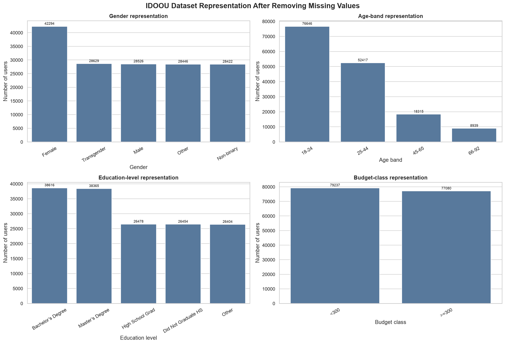
{kind=link}
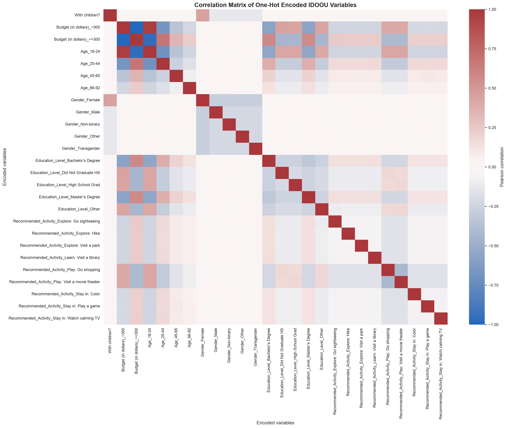
Model comparison before mitigation
{kind=link}
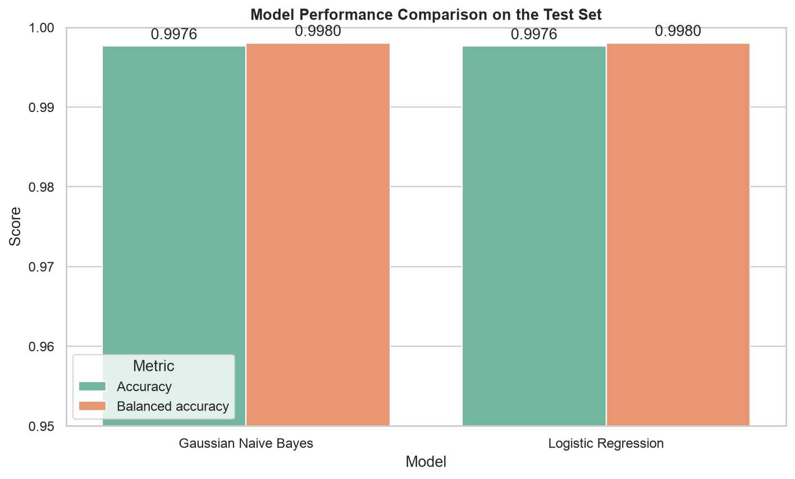
{kind=link}
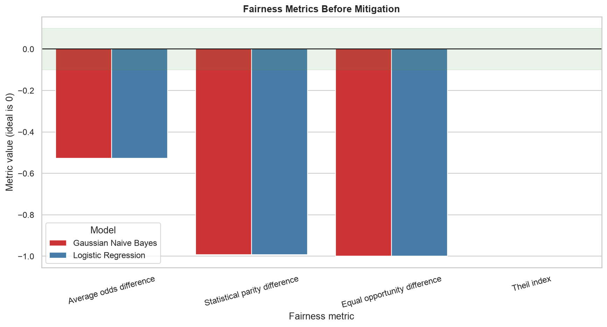
{kind=link}
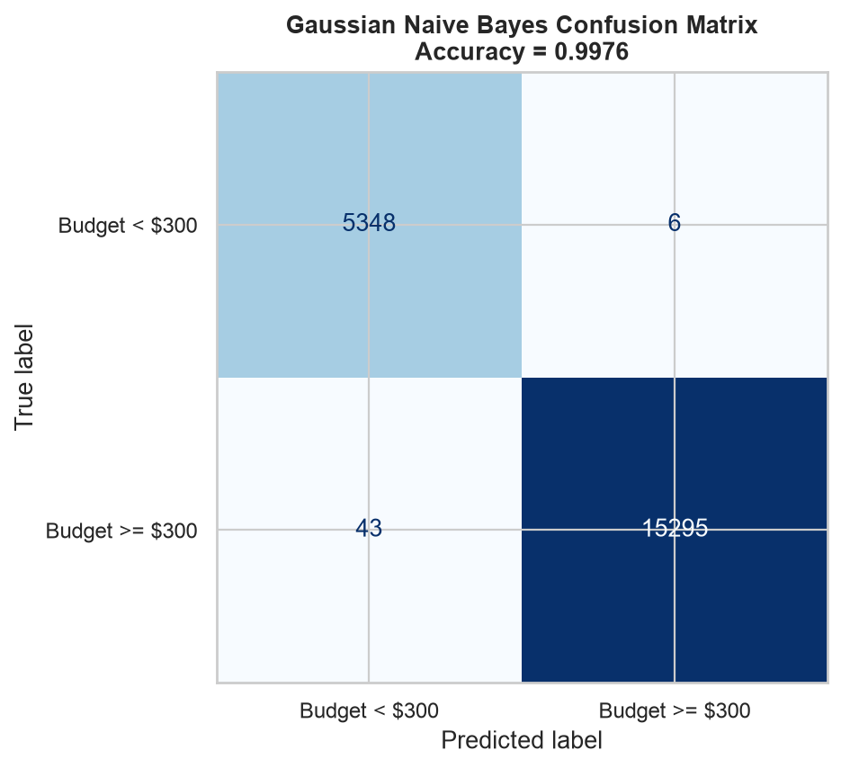
{kind=link}
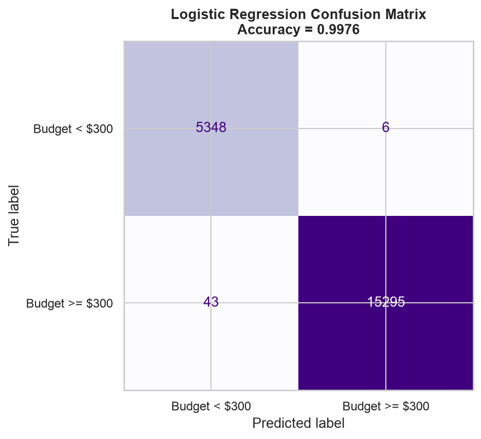
{kind=link}
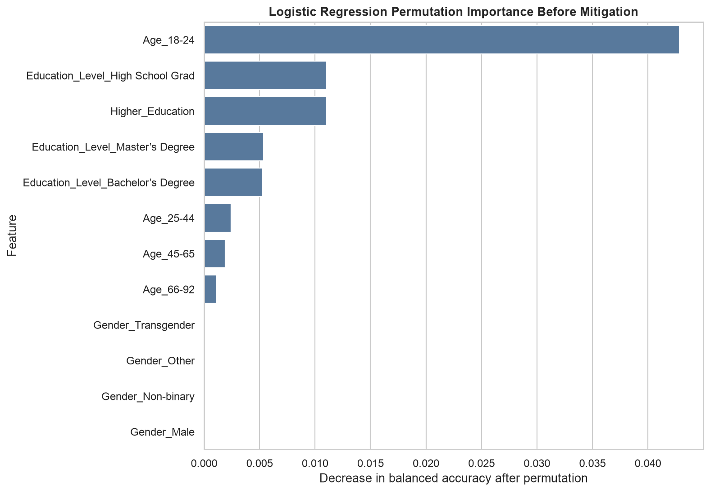
Final model after mitigation
{kind=link}
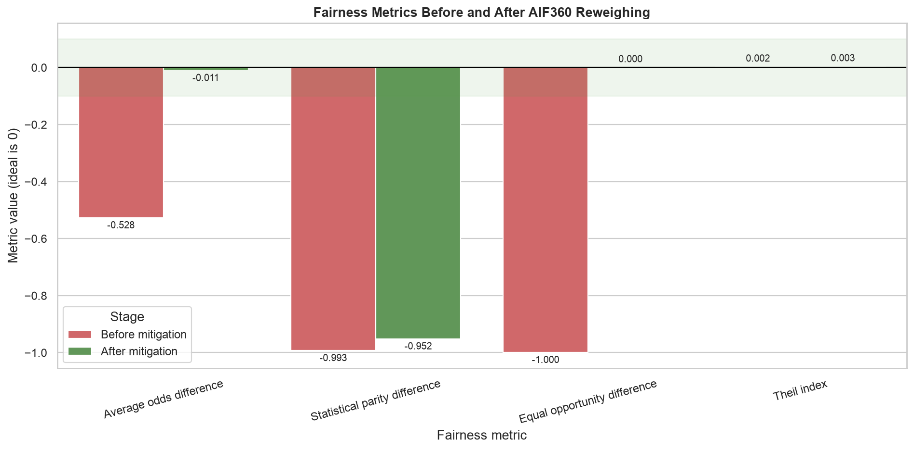
{kind=link}
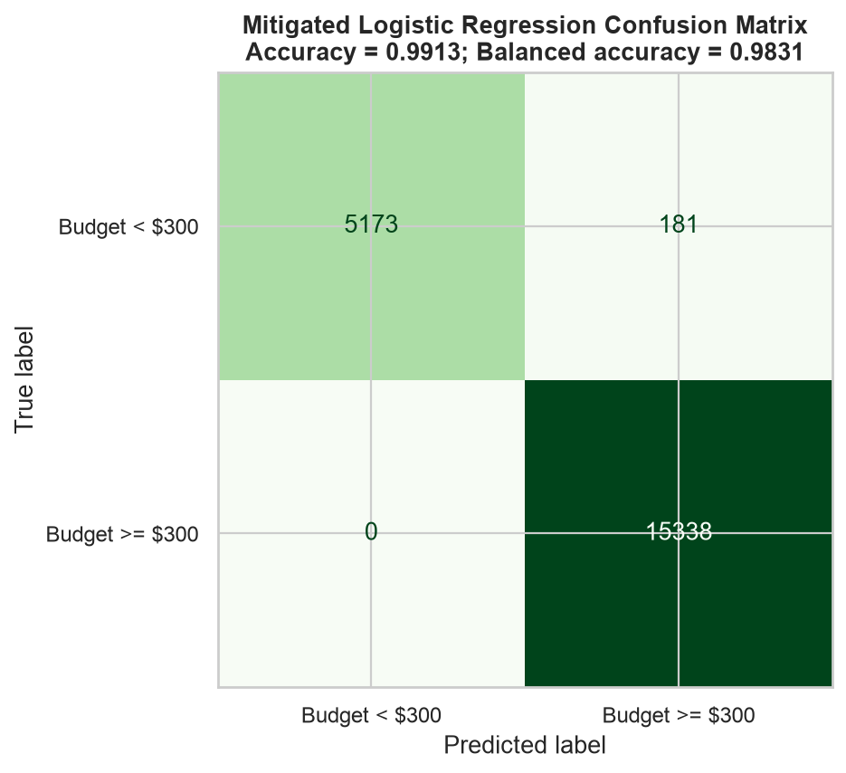
{kind=link}
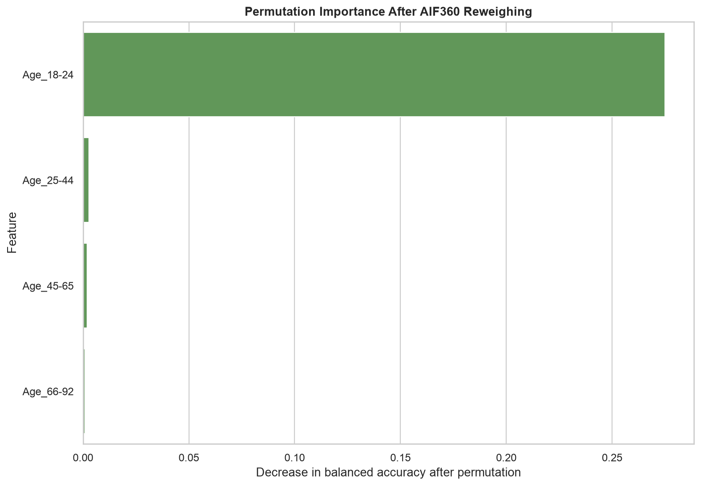
Education-level cohort checks
{kind=link}
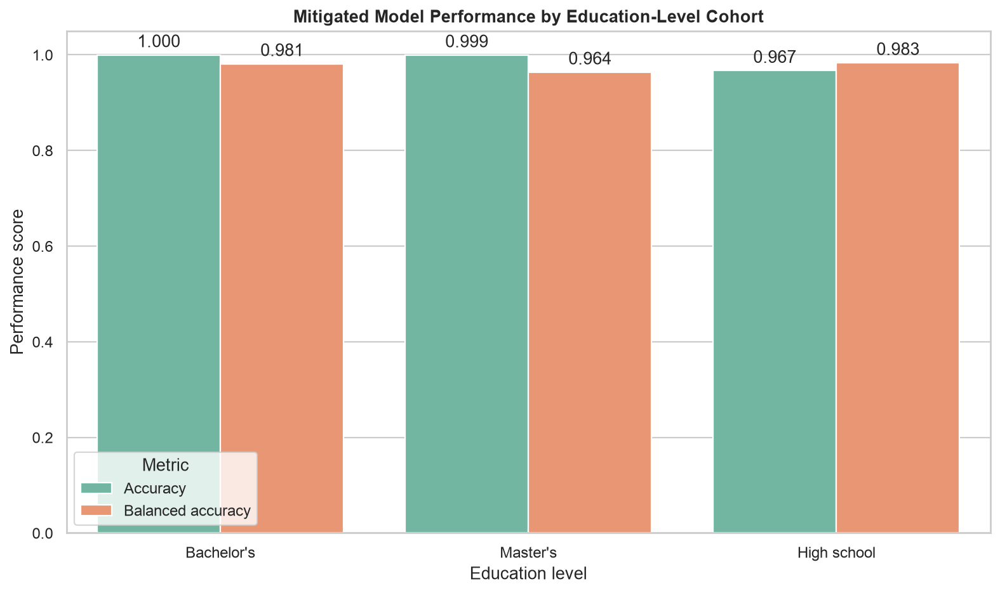
{kind=link}
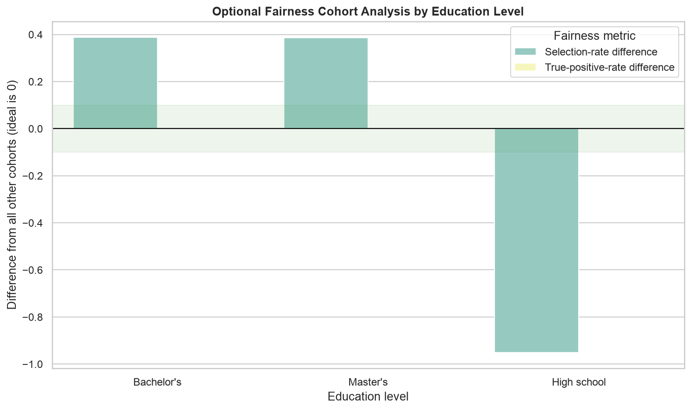
Ethical Considerations
- People must stay in control because a budget estimate can change which activities they see. Users should be able to enter a budget, check and correct their information, reject the estimate, and ask for options outside the predicted price range.
- The data has serious education-based label bias, too many younger users, too few older users, and many missing values. Removing incomplete rows may leave out privacy-conscious users, while education can act as a shortcut for wider income and class differences.
- Before mitigation, the model treats high-school graduates poorly. False negatives can hide activities they could afford, while false positives can suggest activities they cannot afford and cause embarrassment or financial pressure.
- I chose AIF360 Reweighing because it is clear, keeps the original labels, works with Logistic Regression weights, and can be checked before training. It brought average odds difference and equal opportunity difference into the ±0.10 fairness range with only a small performance drop.
- Permutation importance shows that the 18–24 age group matters most before mitigation, followed by education. After Reweighing, education matters less but age matters even more. The app should explain this clearly and monitor results across age groups.
- The model could stereotype users by education, hide useful activities, reinforce class-based assumptions, or cause discrimination if its prediction is reused for anything beyond activity planning.
Caveats and Recommendations
- This synthetic dataset is not fully inclusive. Younger users appear too often, older adults appear too little, and people with missing demographic information are removed. The model should be tested on new and more representative data before any real use.
- Two fairness metrics reached their target range, but statistical parity difference is still far from zero. This remaining gap should be tracked and reviewed before launch.
- False positives may suggest activities a user cannot afford, while false negatives may hide suitable options. The app should show several price ranges and should never remove every alternative because of one prediction.
- The app should use a budget entered by the user whenever possible, collect as little demographic information as possible, set clear deletion rules, protect stored data, and ban high-stakes reuse.
- With more time, I would test combinations of education, age, gender, and missing data. I would also check whether the confidence scores are reliable, whether results change by time or location, privacy, security, accessibility, deliberate misuse, and feedback from affected users.
Business Consequences
- Positive impact: If used carefully, the budget predictor can save users time and suggest activities that fit them better. Clear explanations and user controls can also help IDOOU earn trust.
- Negative impact: If the app suggests insulting, unaffordable, or overly limited options because of a user's education, people may see it as classist and stop using it. Complaints, bad publicity, partner concerns, and the cost of fixing the system could hurt both revenue and the brand.
- IDOOU should not launch the feature unless it can monitor fairness, protect user data, let people correct predictions, provide human help when needed, and track complaints.